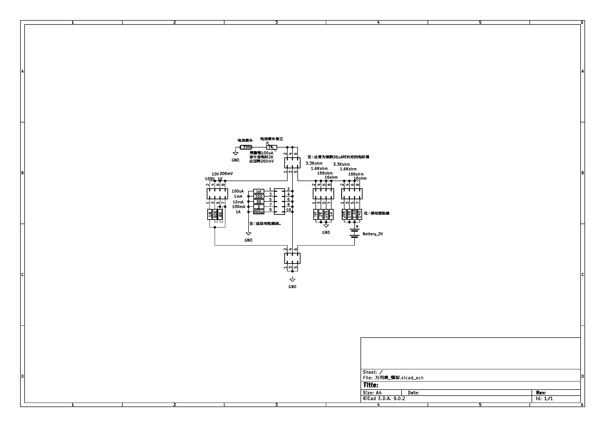
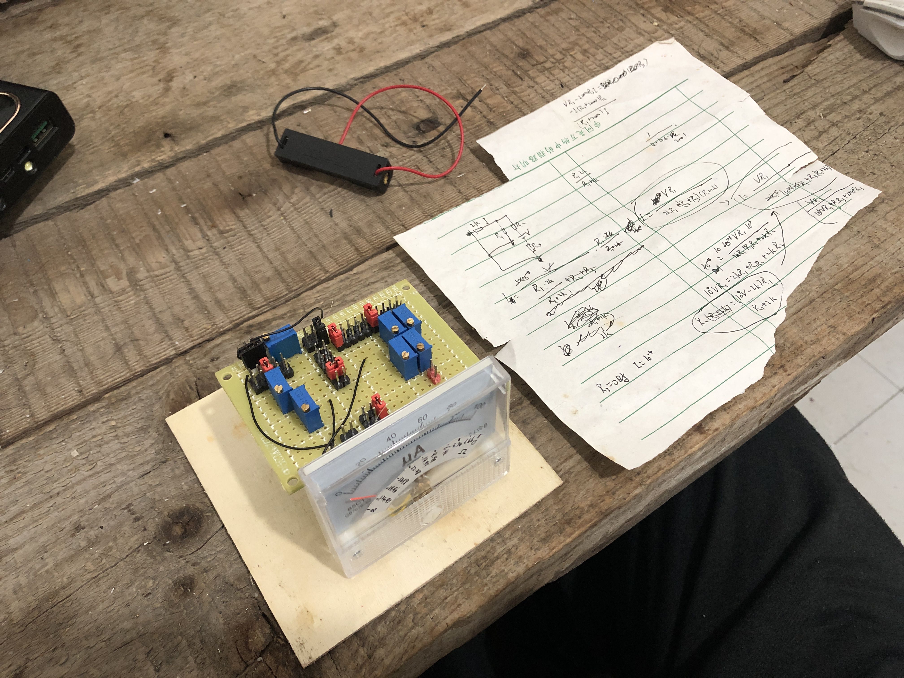

普通万用表体积大，档位不准时无法调。
第一个：学生指针万用表。没有10A档位
第二个：数字万用表。型号未知，已找不到。
第三个：指针万用表MF47。
第四个：福禄克15BMax。
第五个：2026-7制作数字万用表，使用麻烦且需控制芯片，legacy。
第六个：此指针万用表。
电压：加在电阻两端会产生电流。数字表：分压。所需测量的范围：100mV-1000V。
电流：串电阻测电压。所需测量的范围：100uA-10A。
电阻：电阻分压。所需测量的范围：1ohm-10Mohm。（注：福禄克15BMax无法测量100Mohm）
设计精度：1%
电路图：

配件：
1KV档位：10Mohm串连在输入端，和200mV共用档位。做法：10个1Mohm串连。
10A档位：20mohm并联在输入端，和100uA共用档位。做法：5个100mohm并联。
产品图：

高压：范围：1000V以上。常规环境中按击穿距离2000V/mm估算。
低阻：范围：1ohm以下。用电阻率计算。
强流：范围：10A以上。计算一段导体的(低)电阻，测两端电压，计算。
电阻率：
铜20摄氏度1.68 - 1.72 * 10 ^ (-8) (ohm.m) （已验证）
铝20摄氏度2.82 - 2.9 * 10 ^ (-8) (ohm.m)
铁20摄氏度9.71 - 10 * 10 ^ (-8) (ohm.m)